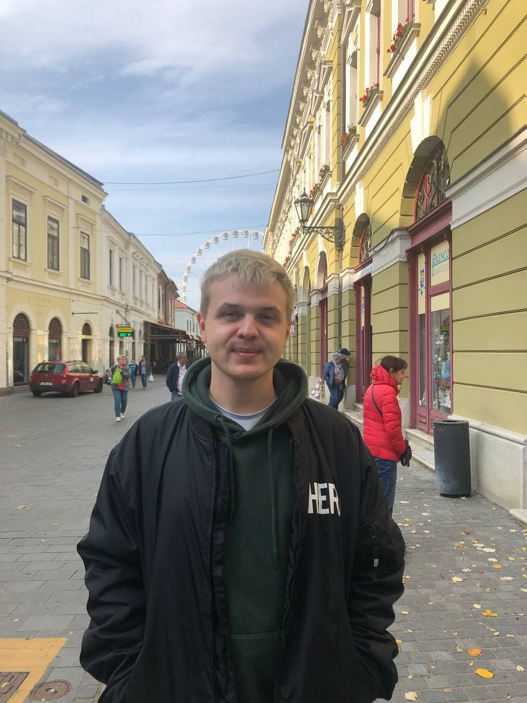

Освіта
-
Закінчив Католицьку школу ім.Василія Великого в 2013 році
Закінчив у 2018 році Державний вищий навчальний заклад 'Прикарпатський національний університет
імені Василя Стефаника' здобув кваліфікацію бакалавр
спеціальність філологія "Філолог. Вчитель Англійської мови і літератури, німецької мови"
У 2020 році здобув звання Магістра спціальність "Менеджмент" професійна кваліфікація "Менеджер.
Бізнес-адміністратор"